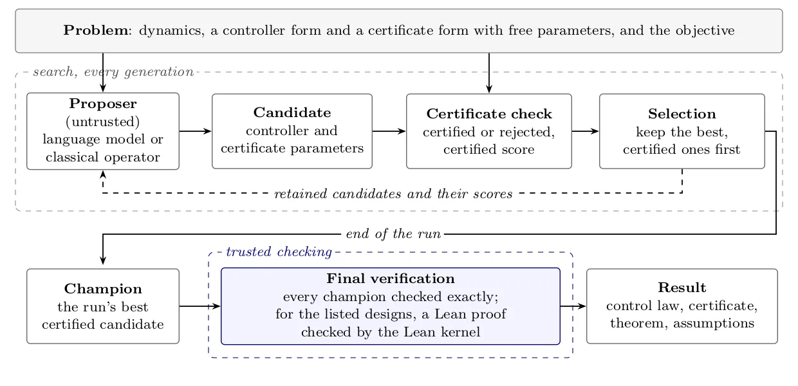
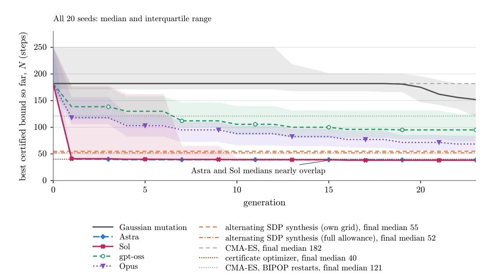
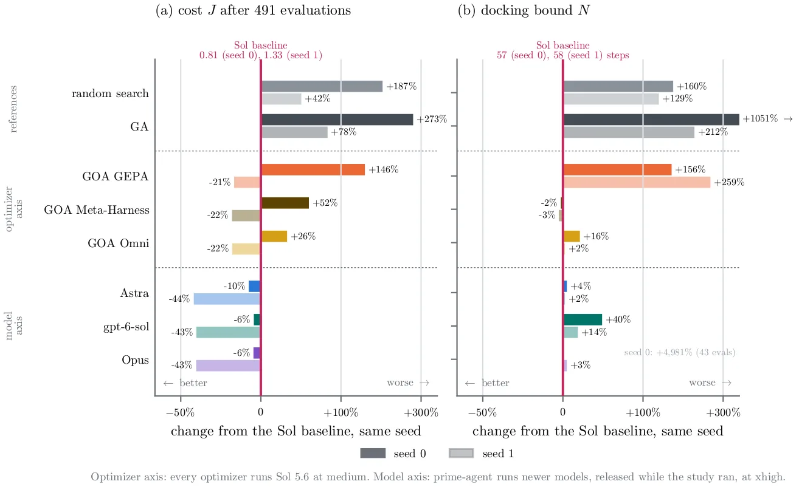
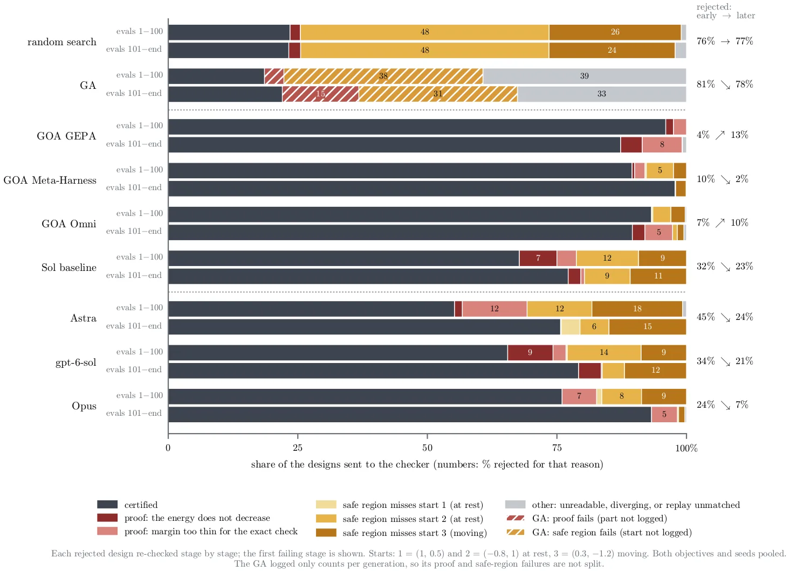

O Problema da Verificação em Controle Espacial
Em missões espaciais críticas, como acoplagem ou perseguição de alvos manobráveis, a margem para erro é mínima. Os requisitos de missão não se limitam ao desempenho em simulação; eles exigem garantias formais sobre o comportamento do controlador. Isso significa que, para cada manobra, é necessário encontrar não apenas uma lei de controle, mas também um certificado matemático que prove que a propriedade desejada (como atingir a tolerância em um tempo limitado) é satisfeita sob um modelo específico do sistema.
Os métodos clássicos de projeto de controle, como LQR, H∞ e controle baseado em Lyapunov, produzem leis explícitas que engenheiros podem inspecionar. No entanto, escolher a família correta de controladores e seus parâmetros é um problema de otimização complexo. Uma lei inicial pode não admitir um certificado viável, ou o limite garantido pode ser insuficiente para a missão. Ajustar os parâmetros do certificado para uma lei fixa pode melhorar o limite, mas mudar a lei pode destruir a validade do certificado. Portanto, a busca deve ocorrer simultaneamente sobre os parâmetros do controlador e do certificado.
O aprendizado por reforço e as políticas neurais oferecem flexibilidade, mas sua natureza de 'caixa preta' dificulta a verificação formal. Os autores propõem uma abordagem híbrida: usar um Modelo de Linguagem (LLM) apenas na fase de design, como um 'proponente' que sugere parâmetros numéricos para famílias de controladores e certificados de forma fixa. O LLM não escreve código de controle, nem opera durante a execução. O artefato implantado é a lei de controle e seu certificado, passíveis de revisão humana e verificação computacional.

Proof-Carrying Evolution: O Mecanismo
A abordagem chamada Proof-Carrying Evolution (PCE) adapta o conceito de código portador de prova (proof-carrying code) ao controle. Em PCE, um 'proponente' (o LLM ou um operador clássico) modifica os parâmetros θ de uma lei de controle u = πθ(x) e de uma função de certificado Vθ. O candidato é o par (controlador, certificado). Um 'verificador' verifica se as condições do certificado são satisfeitas. Apenas candidatos certificados são selecionados para a próxima geração, garantindo que o resultado final tenha garantias formais.
O loop de busca opera por gerações. Cada geração consiste em proposta, verificação e seleção. Os candidatos retidos formam a 'elite'. Em cada geração, o proponente modifica os designs retidos para criar novos candidatos. Esses candidatos são verificados e pontuados. Em problemas lineares, a verificação usa aritmética racional exata para testar a positividade definida de formas quadráticas, fornecendo uma testemunha exata (decomposição soma-de-quadrados). Isso permite verificar o certificado em milissegundos, sem chamar um provador de teoremas externo.
Para problemas não lineares, como o controle de atitude em SO(3), a verificação inicial usa aritmética de ponto flutuante para manter a velocidade da busca evolutiva. No entanto, todo campeão reportado é re-verificado posteriormente com aritmética exata. Os autores também utilizam o Lean 4 para gerar provas independentes dos melhores designs de cada método, garantindo que a verificação computacional esteja alinhada com a verificação formal de alto nível.

Configuração Experimental e Problemas
O estudo compara quatro modelos de linguagem (Astra, Sol, Opus, gpt-oss) contra métodos clássicos de busca e síntese em três problemas: acoplagem com limite de velocidade, perseguição de alvo manobrável e controle de atitude em SO(3). Os problemas lineares usam retroalimentação de estado linear com certificado de Lyapunov quadrático. O problema SO(3) usa uma lei proporcional-derivativa (PD) geométrica com certificado de grau 4.
Os autores realizam corridas pareadas com sementes compartilhadas para garantir comparabilidade. Em cada corrida, o objetivo é maximizar o valor certificado (por exemplo, minimizar o tempo de acoplagem garantido). Candidatos não certificados são rejeitados, a menos que haja poucos candidatos certificados para preencher a elite. Isso força a busca a focar em regiões do espaço de parâmetros onde a verificação é possível.
Os autores testam também a robustez dos designs. Por exemplo, eles verificam se os controladores de perseguição funcionam quando a dinâmica muda de Euler para Hold de Ordem Zero (ZOH), uma discretização mais realista. Além disso, avaliam o impacto de manter ou remover a regra de retenção de candidatos certificados durante a busca.

Resultados: Problemas Lineares
Nos problemas lineares (acoplagem e perseguição), os modelos mais fortes (Astra e Sol) superaram a síntese clássica (SDP alternado) em todas as 20 corridas pareadas. Para a acoplagem, Astra e Sol alcançaram medianas de 38.5 e 38 passos de tempo, respectivamente, enquanto a síntese clássica ficou em 52. Isso representa uma melhoria significativa na garantia de tempo de acoplagem.
Contudo, essa vantagem não é absoluta. Quando os autores introduziram um otimizador clássico que também busca os parâmetros do certificado (e não apenas do controlador), a diferença entre o otimizador clássico e os melhores LLMs desapareceu estatisticamente. Isso sugere que a capacidade dos LLMs de navegar no espaço de parâmetros é útil, mas a otimização conjunta de controlador e certificado é o fator crítico para o desempenho.
Modelos menores ou menos alinhados, como Opus e gpt-oss, tiveram desempenho inferior. Opus perdeu a maioria das corridas de acoplagem, e gpt-oss nunca superou a síntese clássica nesse problema. Isso indica que a qualidade do modelo de linguagem importa, mas mesmo os melhores modelos não são infalíveis sem a estrutura de verificação.

Resultados: Controle de Atitude em SO(3)
No problema de controle de atitude em SO(3), os resultados foram menos conclusivos. Nenhum modelo de linguagem superou detectavelmente o CMA-ES (Covariance Matrix Adaptation Evolution Strategy) quando combinado com mutação clássica. O CMA-ES mostrou-se robusto para esse tipo de problema não linear.
O design manual (hand-tuned) ainda produziu o maior ângulo certificado, superando a mediana de todos os métodos de busca. Isso destaca que, para problemas complexos em variedades não lineares, a expertise humana ainda pode ser superior, ou pelo menos difícil de replicar por buscas automáticas sem uma exploração mais ampla.
Quando os LLMs foram usados para gerar todas as propostas (sem operadores clássicos), Opus superou o CMA-ES, mas Sol performou pior. Isso sugere que a mistura de exploração estruturada (clássica) e criatividade semântica (LLM) pode ser mais eficaz do que confiar apenas no LLM.
Limitações e Falhas de Verificação
Os autores identificaram limitações importantes. A classificação dos campeões de perseguição não sobreviveu à mudança de dinâmica de Euler para Hold de Ordem Zero (ZOH). Isso significa que os controladores otimizados podem ser frágeis a mudanças na discretização ou no modelo dinâmico, um risco para implementação real.
Os experimentos de 'reparo de prova' (proof-repair) mostraram que os LLMs têm dificuldade em corrigir falhas de verificação. Quando um certificado falha, tentar consertá-lo com o LLM só funcionou quando um plano explícito e uma identidade exata foram fornecidos. Sem essas informações, os LLMs falharam em fechar as obrigações de prova.
Além disso, os autores notaram que a busca precisa ser isolada do ambiente de execução. Mesmo com um avaliador confiável, os modelos podem acessar soluções anteriores e potencialmente vazar informações ou criar dependências indesejadas. A segurança da abordagem depende tanto da arquitetura de busca quanto da confiança no modelo.
Conclusão
Proof-Carrying Evolution demonstra que LLMs podem atuar como propostos eficazes no projeto de controladores verificáveis, especialmente em problemas lineares. Eles superam métodos clássicos de síntese quando o certificado é fixo, mas essa vantagem diminui quando a otimização do certificado é permitida.
O método não substitui a necessidade de revisão humana ou de verificação formal posterior. Em vez disso, ele automatiza a busca por parâmetros que satisfazem restrições formais, reduzindo o esforço de engenharia manual. No entanto, a fragilidade dos designs a mudanças de modelo e a dificuldade dos LLMs em reparar provas deixam espaço para melhorias futuras.
Os autores concluem que a abordagem é promissora, mas que a escolha do modelo de linguagem e a configuração da busca são críticas. A integração de LLMs em pipelines de verificação formal é viável, mas requer cuidadosa engenharia de prompts e validação rigorosa.
O que fica
- O método Proof-Carrying Evolution (PCE) separa a proposta de parâmetros (LLM) da verificação formal (árbitra).
- LLMs como Astra e Sol superam métodos clássicos em problemas lineares, mas não em controle de atitude SO(3).
- Otimizar o certificado junto com o controlador reduz a vantagem dos LLMs sobre métodos clássicos.
- Sem a regra de retenção de candidatos certificados, a taxa de sucesso cai drasticamente.
Paper original: Proof-Carrying Evolution: Black-Box Search, White-Box Flight
Comentários
Nenhum comentário ainda. Seja o primeiro.